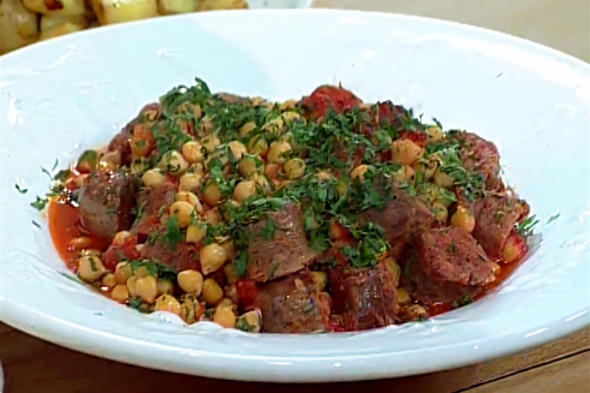

Cazuela

Description
This is a recipe I first had from my dad when I was 7ish years old, it's a nice dish that sticked up with me for quite some time until my now 20 years old.
This is a spanish recipe I believe, and what makes it so tasty I believe it's the chorizo and how nice it tastes when it's cooked for a while.
Ingredients
- 5 Chorizos
- 100g de panceta ahumada
- 6 dientes de ajo
- Una cebolla en cubitos
- 1 pimiento rojo en cubitos
- 1 litro de tomates triturados
- 200cc de vino tinto
- 200cc de caldode carne
- 200g de garbanzos
- 1 punado de perejil fresco
- Aji molido
- Pimenton
- Sal y pimienta
- Aceite de oliva
Steps
- Colocar la olla al fuego y comenzar salteando la panceta; luego agregar el chorizo previamenteblanqueado
- Una vez que toma color, agregar el ajo picado, la cebolla y pimiento en cubos, y levantar el fondo con el vino
- Agregar el tomate triturado y el caldo, luego los garbanzos ya hervidos
- Terminar la coccion y dejar reducir hasta que tome consistencia
- Espolvorear con perejil fresco antes de servir